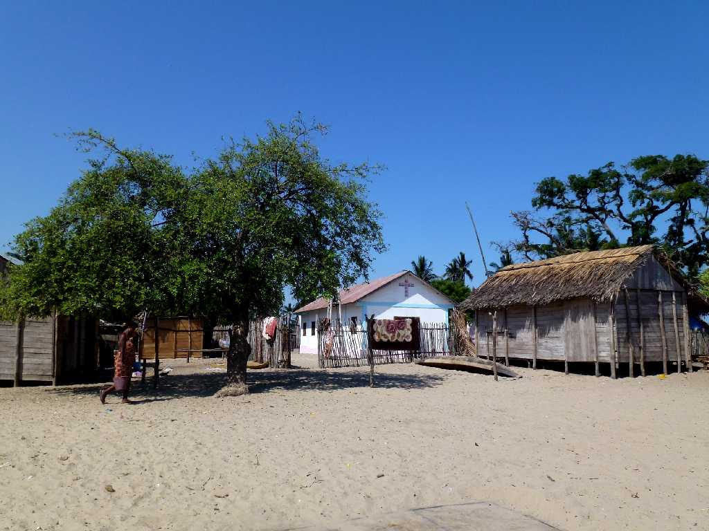
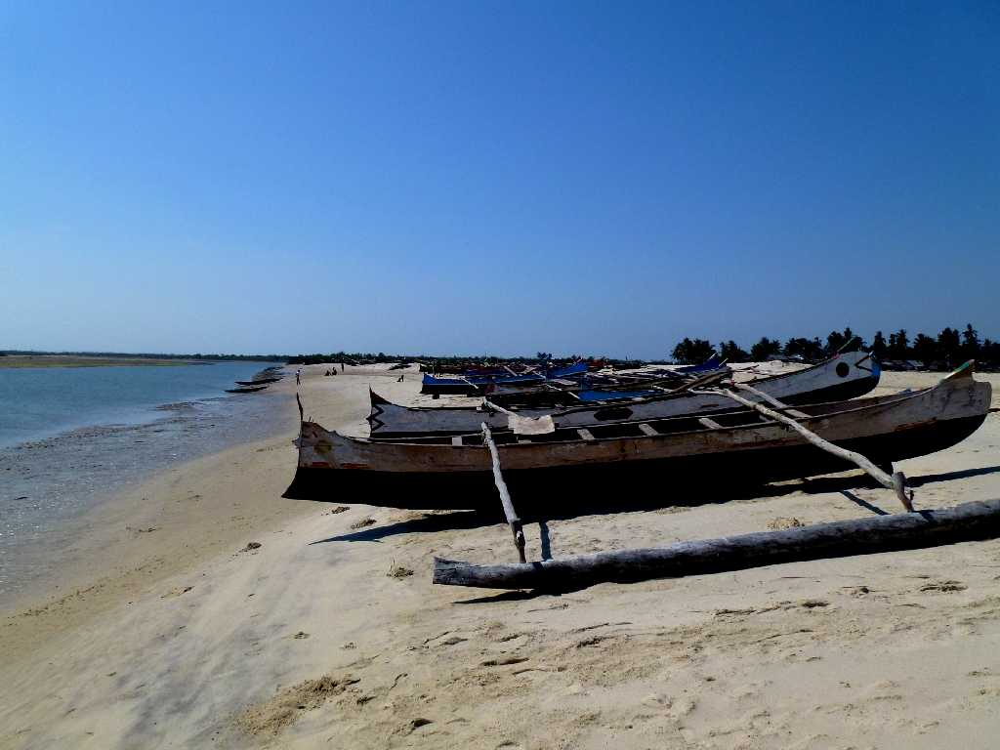
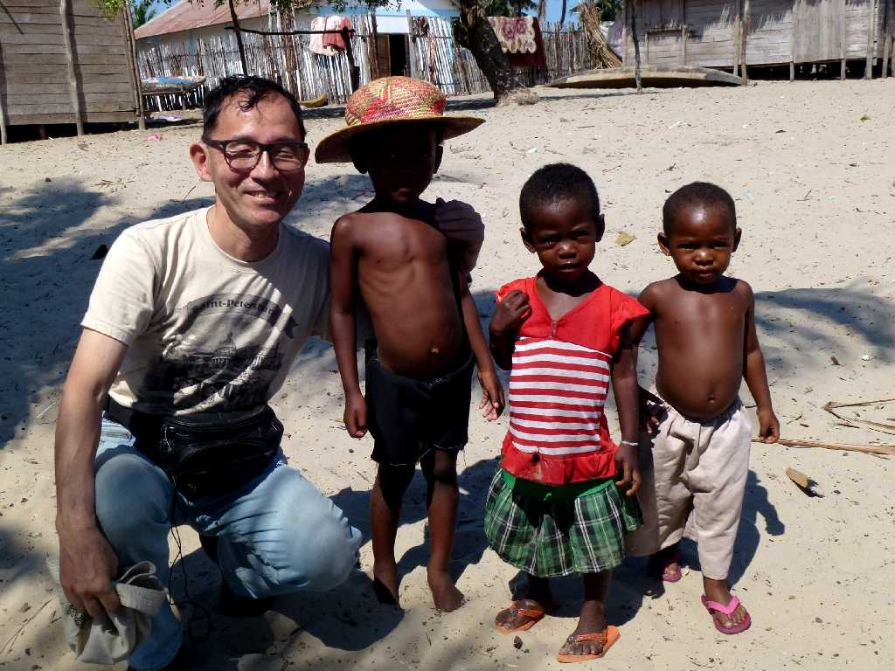
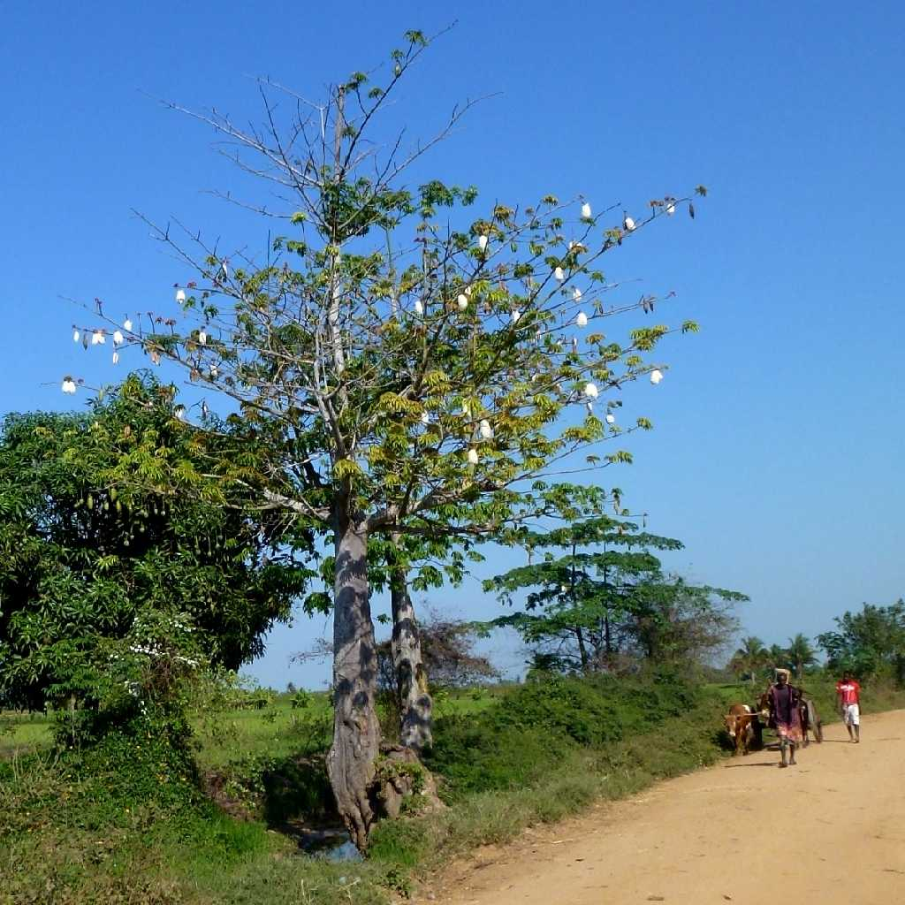

Bethania Village Morondava
１,４００人程のモロンダバのベタニア漁村にもかわいい教会がある

Canoe Bethania Village Morondava
マングローブが自生する湾内を往来するカヌー

October 15 2013 Bethania Village Morondava

Cotton Tree Morondava
モロンダバ郊外にある綿の原種の木